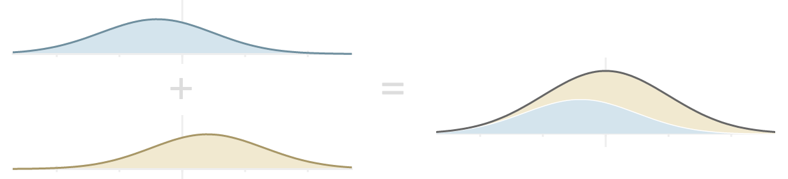
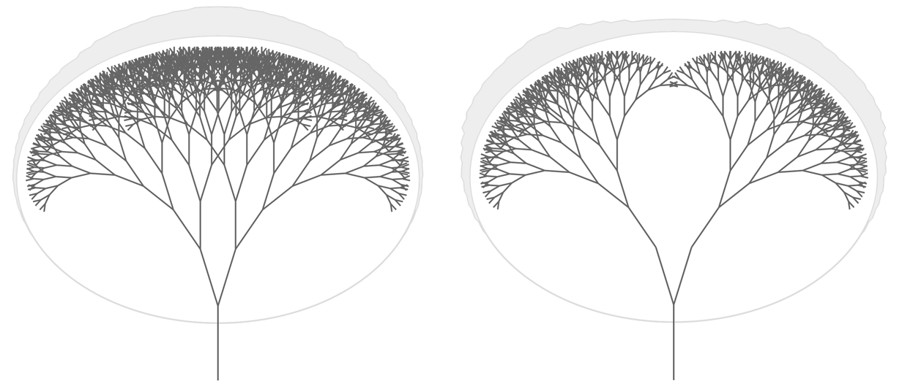
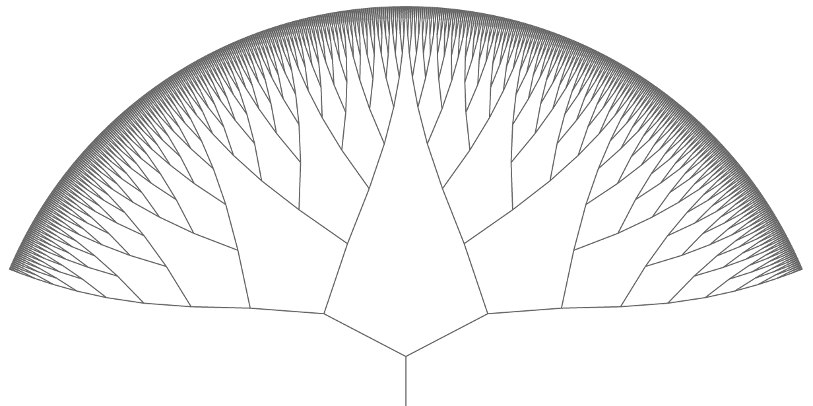
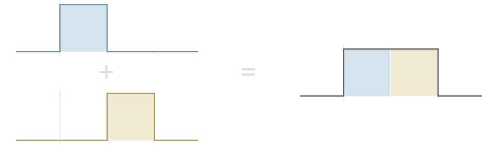
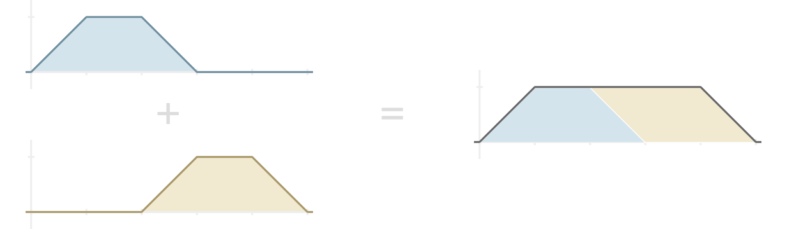
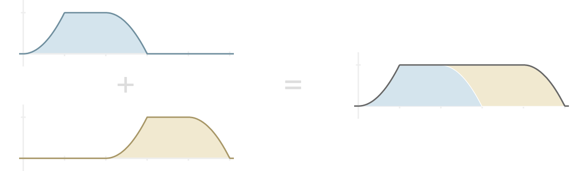
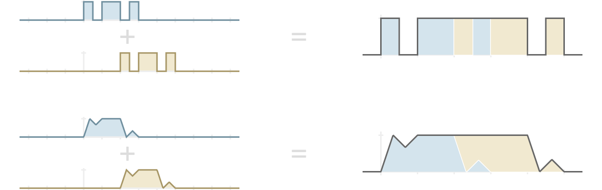
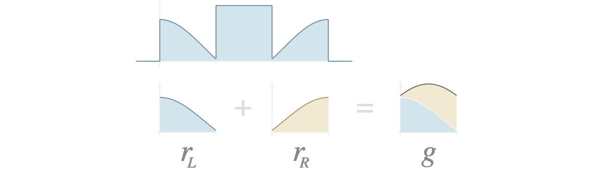
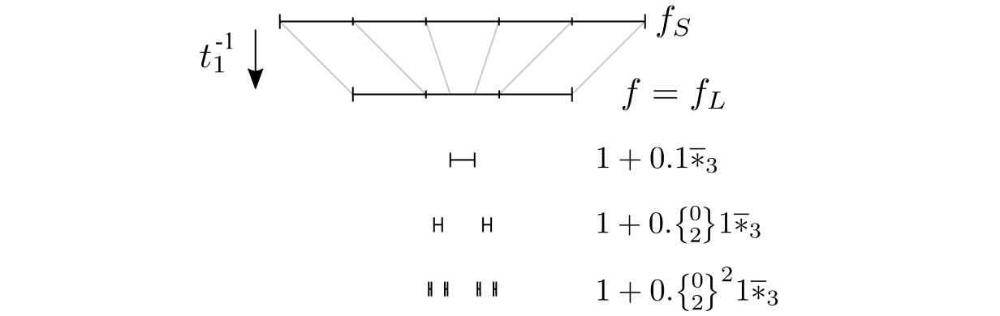
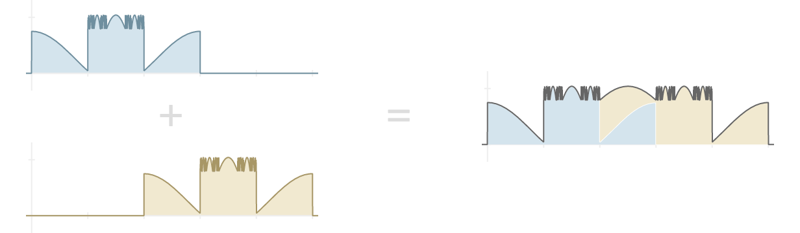

These are notes I’m creating for myself as I explore functions \(f\) that can be written as a sum \(f = g_1 + g_2\) where \(g_1\) and \(g_2\) are the same up to symmetry, and both \(g_1\) and \(g_2\) strongly resemble shifts of the original function \(f\). When a function \(f\) has these properties, I informally call it a self-replicating function.
Figure 1: As an example of a self-replicating function, the normal curve can be expressed as the sum of two normal-like curves that are reflections of each other.
Like the word fractal, this term is not rigorously defined — in particular, it depends on the ambiguous notion of “strong resemblance” — although I plan to investigate more precise requirements below.
1 Motivation
I became interested in self-replicating functions by working on algorithms to procedurally generate 3d models of natural-looking trees. When algorithmically making trees, it makes sense to start from the idea of an L-system, which can be visualized as a kind of fractal in which a trunk forks into branches that themselves fork into smaller subranches, this process repeating infinitely.
I noticed that tree-like L-systems can have a large amount of “branch overlap” concentrated around a central area of their apparent surface. For example, consider the two images in figure 2. On the left is a standard L-system along with a histogram showing the density of leaf points along the edge. Intuitively, the leaf points are dense even toward the extreme angles of the tree’s top. However, the density increases continuously toward the center.
We could think of each leaf point as doing a certain amount of work by covering some area along the top of the L-system. Each subtree is so oblivious to its other subtrees that they overlap heavily, and the central leaf points end up being highly redundant. To illustrate this redundancy, the right-hand figure shows the exact same L-system with essentially half of the tree removed — yet the shape formed by the leaf points is only slightly changed.
Figure 2: Left: An L-system; Right: the same system with two large subtrees removed. In both cases, a histogram of leaf point density is provided around an outer ellipse.
One approach to smoothing out the distribution of leaf points would be to compromise the fractal-like nature of the system by choosing each line direction based on where it is within the fractal, rather than simply by making each branching point a smaller version of its parent. The line directions can be chosen so that the set of points at a fixed distance from the trunk point form a set of equidistant angles from a central point. The result is an extremely regular edge, as seen in figure 3.
Figure 3: A L-like system in which line directions are chosen to maximize the regularity of leaf point distribution.
This is ideally efficient in that each leaf point is equally important in forming the shape of the system. However, this system is defined in terms of the path to each point. Is it possible to design a system so that the overall distribution of leaf points is fairly even, yet each subtree’s shape is independent of its position within the full tree?
If this goal were achieved, we would necessarily have a leaf point distribution which was the sum of two smaller versions of itself. Intuitively, the leaf-point distribution of any L-system is already a self-replication function because, if its two main subtrees have distribution functions \(g_1\) and \(g_2\), then the full tree has distribution function \(f = g_1 + g_2\). I have to say intuitively here because I haven’t formally defined the leaf-point distribution of an L-system.
Thus, L-systems naturally coincide with self-replicating functions. Although there are probably self-replicating functions which do not correspond with L-systems, I nonetheless find it interesting to independently explore the world of self-replicating functions.
2 Simple cases
Technically, any polynomial can be seen as a kind of self-replicating function. For example, if \(f(x) = x^2\),
\[\begin{densearray} g_1(x) & = & (x + 1)^2 - 1 = x^2 + 2x, {\class{optquad}{}}\text{and} \\ g_2(x) & = & (x - 1)^2 - 1 = x^2 - 2x, \\ \end{densearray}\]
then \(f = g_1 + g_2\), and each \(g_i\) is a shift of the original function \(f\). In general, if \(f(x) = ax^n + O(x^{n-1})\) then we can choose \(g_i(x) = a(x\pm 1)^n + O(x^{n-1})\) so that \(f = g_1 + g_2\), and each \(g_i\) has
\[ \lim_{x\to\pm\infty}\frac{g_i(x)}{f(x)} = 1,\]
which is good enough for me to subjectively say that they strongly resemble shifts of \(f\).
However, the original motivation for self-replicating functions is based on distribution functions, so the rest of this note focuses on functions \(f\) for which \(\lim_{x\to\pm\infty}f(x) = 0\).
Another simple approach would be to set \(g_1 = g_2 = \frac{1}{2}f\) for any function \(f\). This is not very interesting, and the word shift in the informal definition of a self-replicating function is intended to defeat this trivial case. That is, each \(g_i\) is expected to be similar to a translation of \(f\), such as \(f(x-1)\) or \(f(x+1)\).
2.1 Indicator functions
The next function I’ll describe is simple and meets all of the requirements so far. An indicator function is a function taking on only the value 0 or 1; it’s also sometimes referred to as a characteristic function. If \(f\) is an indicator function, then you can think of those \(x\) with \(f(x) = 1\) as belonging to the subset of the domain which is indicated by the function. It’s handy to use the following bracket notation of Knuth and others: given any boolean predicate \(P(x)\), let \([P(x)]\) denote the value 1 when \(P(x)\) is true, and false otherwise (Knuth 1998).
Given a half-open interval \([a, b)\), define \(I_{[a, b)}\) to be the function \([x\in[a, b)]\). The following equation shows how such indicator functions can be considered simple self-replicating functions: \(I_{[0, 2)} = I_{[0, 1)} + I_{[1, 2)}\).
Figure 4: Visual representation of the addition of indicator functions of intervals.
In order to match the equation \(f = g_1 + g_2\), emphasizing the similarity between the \(g_i\)’s and \(f\), we can set \(f = I_{[0, 2)}\), \(g_1 = f(2x) = I_{[0, 1)}\), and \(g_2 = f(2(x - 1)) = I_{[1, 2)}\).
2.2 Ramp functions
Things get more interesting when \(g_1(x) g_2(x) \ne 0\) for some \(x\). To this end, define the ramp function for values \(a,b,c,d\) with \(a < b < c < d\) via
\[ J_{a,b,c,d} = \begin{cases} \frac{x - a}{b - a} & \text{if } x \in [a, b), \\ 1 & \text{if } x \in [b, c), \\ \frac{d - x}{d - c} & \text{if } x \in [c, d), \text{and} \\ 0 & \text{otherwise.} \\ \end{cases}\]
Then \(J_{0,1,4,5} = J_{0,1,2,3} + J_{2,3,4,5}\), as illustrated in figure 5.
Figure 5: Visual addition of two ramp functions to form another.
The ramp function example gives me four ideas for further study:
- The addends and the sum cannot be expressed as linearly related; that is, there is no linear function \(\ell(x)\) so that \(J_{0, 1, 2, 3}(\ell(x)) = J_{0, 1, 4, 5}(x)\). Contrast this with the interval functions where \(I_{[0, 1)}(x / 2) = I_{[0, 2)}\). This raises the questions: Which self-replicating functions allow for this linear-relation restriction? Is there a slight modification of ramp functions which meets this linear-relation restriction?
- The ramp functions are piece-wise linear, but that linearity is not really the key to their being self-replicating. Rather, the key is that the left ramp and right ramp sum to 1, which matches the middle height of the functions. Which more general self-replicating functions can be constructed using this idea?
- What happens if we treat the sum \(f = g_1 + g_2\) as part of a sequence? Thinking of L and R for left and right, let \(f^{(0)}_L = J_{0, 1, 2, 3}\), and \(f^{(i)}_R = f^{(i)}_L(x-2)\) for \(i \ge 0\). Thinking of S for sum, define \(f^{(i+1)}_S = f^{(i)}_L + f^{(i)}_R\) for \(i \ge 1\). If \(f^{(i)}_L\) is positive on \((0, b)\), then \(f^{(i)}_R\) is positive on \((2, b + 2)\), so \(f^{(i+1)}_S\) is positive on \((0, b + 2)\). Set \(f^{(i+1)}_L = f^{(i+1)}_S(x (b + 2) / b)\) so that we maintain the region on which the left function is positive. In this way, we get a sequence of functions. What is the limiting behavior? Can we attempt to extend the sequence backwards? Can we say anything in general about the limiting behavior of a class of starting functions \(f^{(0)}_L\)?
- For the current ramp functions, the middle section is flat with value 1, while the edges sum to 1. Can we do something more interesting where the edges sum to a non-constant value? I can imagine this leading to a discontinuous function. Is there a way to do this where the functions are continuous, or at least continuous almost everywhere? Can we describe a general class of self-replicating functions which are not continuous, such as the indicator function of the Cantor dust?
Some of these questions will be answered below.
2.3 Nonlinear ramps
Other curves that sum to 1 could easily take the place of the left and right edges of the ramp function. For example, the left and right ramps could be replaced by curves with the shapes of \(x^2\) and \(1-x^2\) on \(x\in [0, 1]\), as illustrated in figure 6.
Figure 6: An example of nonlinear ramp functions using \(x^2\) on \(x\in [0, 1]\) to determine the edge shapes.
Given any function \(f:[0,1]\to [0,1]\), the generalized ramp function is
\[ K_{a,b,c,d} = \begin{cases} f\big(\frac{x - a}{b - a}\big) & \text{if } x \in [a, b), \\ 1 & \text{if } x \in [b, c), \\ 1 - f\big(\frac{x - c}{d - c}\big) & \text{if } x \in [c, d), \\ 0 & \text{otherwise.} \\ \end{cases}\]
If any function can be written as \(K_{a,b,c,d}\) for some value of \(f\), I’ll call it a \(K-\)function. This form is general enough to include interval functions — for example, by using \(f(x) = 0\) — and to include the previous ramp function \(J(x)\) by setting \(f(x)=x\).
The versatility of the \(K-\)functions shows that we can produce self-replicating functions that are highly discontinuous, such as by setting \(f(x)\) to be the indicator function of a set with many border elements. Even among continuous functions, we can produce self-replicating functions which avoid being “mostly monotonic.” In particular, I’ll say that a function \(f:{\mathbb{R}}\to{\mathbb{R}}\) is peak monotonic iff there is a point \(x\) such that \(a < b < x \Rightarrow f(a) \le f(b)\) and \(x < c < d \Rightarrow f(c) \ge f(d)\). The indicator function of an interval and the ramp function are both peak monotonic, while the example \(K-\)functions in figure 7 are not.
Figure 7: Example \(K-\)functions: on the top is a function more discontinuous than the indicator function of an interval; on the bottom is a continuous but non-peak-monotonic function.
2.4 Non-plateau functions
The ramp functions \(K_{a,b,c,d}\) all have the constant value 1 on the middle interval \([b, c]\). This requires the ramps on intervals \([a, b]\) and \([c, d]\) to sum to 1. In this section, I’ll consider what can happen if we relax this condition. I’ll informally call these non-plateau functions.
It will be useful to propose one possible formalization of a self-replicating function before exploring non-plateau functions.
2.4.1 A formal definition for self-replicating functions
I think the term self-replicating function is best left as an intuitive, non-rigorous concept because there seem to be a wide variety of instances that are best studied via their own particular flavors of a formal definition. A number of other terms used to discuss mathematics are similarly unformalized or context-specific: consider fractal, symmetry, or closure as examples. Nonetheless, many self-replicating functions meet the conditions of the definition I’ll present next.
Call a function \(f\) exactly self-replicating iff there exist continuous bijections \(s\), \(t_1\), and \(t_2\) such that \(s\) is not the identity function and
\[{\left.\mbox{$\begin{densearray} f_L(x)&=&f(x), \\ f_R(x)&=&f(s(x)), \\ f_S(x)&=&f_L(x) + f_R(x), \text{and} \\ f_L(x)&=&t_2(f_S(t_1(x))). \end{densearray}$}\;\;\right\rbrace\class{postbrace}{ }}\qquad(1)\]
The L, R, and S subscripts are meant to hint that these functions act as the left addend, right addend, and the sum; the \(s\) function suggests a shift, while the \(t_1\) and \(t_2\) functions suggest a transformation. The last equation in (1) captures the similarity relationship between the addend \(f = f_L\) and the sum \(f_S = f_L + f_R\).
Example The ramp functions given in §2.2 and §2.3, viewed as \(K-\)functions, all adhere to the general form
\[K_{0,1,2,3} + K_{2,3,4,5} = K_{0,1,4,5}.\]
In this case, \(f(x) = f_L(x) = K_{0,1,2,3}\) and \(f_R(x) = K_{2,3,4,5} = f(x-2)\). We can satisfy all of the equations of (1) by using these functions:
\[{\left.\mbox{$\begin{densearray} t_1(x) & = & \begin{cases} x & x \le 1, \\ 3x - 2 & 1 < x < 2, \\ x + 2 & x \ge 2; \\ \end{cases}\\ t_2(x) & = & x; \text{ and} \\ s(x) & = & x - 2. \\ \end{densearray}$}\;\;\right\rbrace\class{postbrace}{ }}\qquad(2)\]
This is a simple yet foundational case — it may be interesting to see which other functions are exactly self-replicating with these parameters.
2.4.2 Characterizing one type of exactly self-replicating function
In this section I’ll give sufficient and necessary conditions for a function to be exactly self-replicating with the \(s\), \(t_1\), and \(t_2\) functions given in (2), and with \(f(x)=0\) outside of the interval \([0, 3]\). This can be considered the most general version of the category of functions we’ve explored so far.
For convenience, I’ll introduce a notation to extract a new function with domain \([0, 1]\) from any closed domain interval of an original function \(f\). Specifically, let \(f {\,\big|\,}[a, b]\) denote the function with domain \([0,1]\) where
\[ \big(f {\,\big|\,}[a,b]\big)(x) = f(a + (b-a)x). \]
Let \(f:{\mathbb{R}}\to{\mathbb{R}}\) be any function such that \(f(x)=0\) outside of \([0, 3]\). Define the functions \(r_L,\) \(r_R,\) and \(g\) via:
\[{\left.\mbox{$\begin{array}{rlc} r_L & = & f{\,\big|\,}[0, 1], \\ r_R & = & f{\,\big|\,}[2, 3], \\ g & = & r_L + r_R. \end{array}$}\;\;\right\rbrace\class{postbrace}{ }}\qquad(3)\]
Conceptually, \(r_L\) and \(r_R\) are the left and right ramp functions.
Figure 8: An example showing how \(r_L\), \(r_R\), and \(g\) are extracted from a function \(f\), shown on top.
I’ll show that many copies of the shape of \(g\) must dominate the landscape of \(f\) in order for it to be exactly self-replicating.
Now suppose that, in addition to having \(f(x)=0\) outside of \([0,3]\), \(f\) is also exactly self-replicating. I’ll use (1) to define functions \(f_L\), \(f_R\), and \(f_S\) in terms of \(f\) and the functions \(s\), \(t_1\), and \(t_2\) from (2). Notice that
\[\begin{array}{rcl} \big(f_S {\,\big|\,}[2,3]\big) & = & \big(f_L + f_R {\,\big|\,}[2, 3]\big) \\ & = & r_L + r_R = g. \\ \end{array}\]
Since \(f_L(x) = f_S(t_1(x))\), and \(t_1\) maps \([1\tfrac{1}{3}, 1\tfrac{2}{3}]\) to \([2,3]\), this means \((\,f=f_L {\,\big|\,}[1\tfrac{1}{3}, 1\tfrac{2}{3}]) = g\). Below, I’ll show how repeated application of this kind of logic determines the non-ramp values of \(f\) almost everywhere; a boolean property \(P:{\mathbb{R}}\to\{\text{true},\text{false}\}\) is defined to be true almost everywhere when the set \(\{x : P(x) = \text{false}\}\) has measure zero.
At this point it will be useful to begin using base-3 notation for the intervals at hand. If \(s\) is a finite string with digits from the set \(\{0, 1, 2\}\), then let \(0.s{\overline{*}_3}\) denote the closure of the set of points whose base-3 expansion begins with \(0.s\). For example, \(0.11{\overline{*}_3}\) denotes the interval \([0.11_3, 0.12_3]\) while \(0.12{\overline{*}_3}\) denotes the interval \([0.12_3, 0.20_3]\). I’ll also use \({\big\{\!\raise1.5pt\hbox{$\genfrac{}{}{0pt}{} {\lower1.8pt\hbox{$\smash{\scriptstyle 0}$}} {\lower1pt\hbox{$\smash{\scriptstyle 2}$}}$}\!\big\}}\) to denote a digit that may be either a 0 or a 2; for example, \(0.1{\big\{\!\raise1.5pt\hbox{$\genfrac{}{}{0pt}{} {\lower1.8pt\hbox{$\smash{\scriptstyle 0}$}} {\lower1pt\hbox{$\smash{\scriptstyle 2}$}}$}\!\big\}}1{\overline{*}_3}\) denotes the union of intervals \([0.101_3, 0.102_3]\) and \([0.121_3, 0.122_3]\).
Now, instead of writing \((\,f {\,\big|\,}[1\tfrac{1}{3}, 1\tfrac{2}{3}]) = g\), I can write
\[\big(\,f {\,\big|\,}1.1{\overline{*}_3}\big) = g.\qquad(4)\]
It’s possible to generalize this last equation so that it defines \(f\) almost everywhere on the interval \([1, 2]\).
Recall that the notation \(1.{\big\{\!\raise1.5pt\hbox{$\genfrac{}{}{0pt}{} {\lower1.8pt\hbox{$\smash{\scriptstyle 0}$}} {\lower1pt\hbox{$\smash{\scriptstyle 2}$}}$}\!\big\}}^k1{\overline{*}_3}\) indicates a union of closed intervals. In the next theorem, the notation \((\,f {\,\big|\,}\cup_i [a_i,b_i]) = g\) indicates that, for every \(i\) in the union, \((\,f {\,\big|\,}[a_i,b_i]) = g\).
Theorem 1 \(\;\) Suppose that \(f\) is exactly self-replicating with functions \(s,\) \(t_1,\) and \(t_2\) as given in (2). Also suppose that \(f(x) = 0\) outside of \([0,3]\), and that \(g\) is defined as in (3). Then, for any \(k\ge 0\), \[\big(\,f {\,\big|\,}1.{\big\{\!\raise1.5pt\hbox{$\genfrac{}{}{0pt}{} {\lower1.8pt\hbox{$\smash{\scriptstyle 0}$}} {\lower1pt\hbox{$\smash{\scriptstyle 2}$}}$}\!\big\}}^k1{\overline{*}_3}\big)=g.\]
Proof \(\;\) The proof is by induction on \(k\). Equation (4) provides the base case.
For the inductive step, suppose
\[\big(f=f_L {\,\big|\,}1.{\big\{\!\raise1.5pt\hbox{$\genfrac{}{}{0pt}{} {\lower1.8pt\hbox{$\smash{\scriptstyle 0}$}} {\lower1pt\hbox{$\smash{\scriptstyle 2}$}}$}\!\big\}}^k1{\overline{*}_3}\big) = g.\]
Then
\[\big(f_R {\,\big|\,}3 + 0.{\big\{\!\raise1.5pt\hbox{$\genfrac{}{}{0pt}{} {\lower1.8pt\hbox{$\smash{\scriptstyle 0}$}} {\lower1pt\hbox{$\smash{\scriptstyle 2}$}}$}\!\big\}}^k1{\overline{*}_3}\big) = g,\]
so that
\[\big(f_S {\,\big|\,}\{1,3\} + 0.{\big\{\!\raise1.5pt\hbox{$\genfrac{}{}{0pt}{} {\lower1.8pt\hbox{$\smash{\scriptstyle 0}$}} {\lower1pt\hbox{$\smash{\scriptstyle 2}$}}$}\!\big\}}^k1{\overline{*}_3}\big) = g.\]
Apply \(t_1^{-1}\) to the domain set of \(f_S\) to determine the corresponding domain set of \(f_L\):
\[\big(f {\,\big|\,}1.{\big\{\!\raise1.5pt\hbox{$\genfrac{}{}{0pt}{} {\lower1.8pt\hbox{$\smash{\scriptstyle 0}$}} {\lower1pt\hbox{$\smash{\scriptstyle 2}$}}$}\!\big\}}^{k+1}1{\overline{*}_3}\big) = g.\]
\(\Box\)
Define the sets \(G_k\) and \(G\) via
\[G_k = 1.{\big\{\!\raise1.5pt\hbox{$\genfrac{}{}{0pt}{} {\lower1.8pt\hbox{$\smash{\scriptstyle 0}$}} {\lower1pt\hbox{$\smash{\scriptstyle 2}$}}$}\!\big\}}^k1{\overline{*}_3}\quad\text{and}\quad G = \cup_{k \ge 0}G_k.\qquad(5)\]
Figure 9 illustrates \(G_k\) for low values of \(k\).
Figure 9: The inductive process in the proof of theorem 1. The top line is the domain \([0,5]\) of \(\,f_S\); the line below that is the domain \([0,3]\) of \(\,f;\) then the subsets of \([1,2]\) on which \(f\) is described as the induction proceeds.
Let’s check that the sets \(G_k\) are disjoint. Suppose \(x_j\in G_j\) and \(x_k\in G_k\), where \(j < k\), and we’ll work with the standard base-3 notation in which an all-2 tail is disallowed. Either \(x_k=0.{\big\{\!\raise1.5pt\hbox{$\genfrac{}{}{0pt}{} {\lower1.8pt\hbox{$\smash{\scriptstyle 0}$}} {\lower1pt\hbox{$\smash{\scriptstyle 2}$}}$}\!\big\}}^k1\!\ldots\) or \(x_k=0.{\big\{\!\raise1.5pt\hbox{$\genfrac{}{}{0pt}{} {\lower1.8pt\hbox{$\smash{\scriptstyle 0}$}} {\lower1pt\hbox{$\smash{\scriptstyle 2}$}}$}\!\big\}}^k2\). There are two similar cases for \(x_j\). In the first case, the \((j+1)^\text{th}\) digit of \(x_j\) is 1, which is impossible for the \((j+1)\text{th}\) digit of \(x_k\). In the second case, the \((j+1)^\text{th}\) digit of \(x_j\) is 2 and all subsequent digits, including the \((k+1)^\text{th}\), are 0; this excludes equality since the \((k+1)^\text{th}\) digit \(x_k\) can’t be 0. In either case, \(x_j\ne x_k\), confirming that \(G_j\) and \(G_k\) are disjoint.
Using this disjointedness, we can find the total measure of their union \(G\) as follows:
\[\mu(G) = \sum_{k \ge 0}\mu(G_k) = \sum_{k\ge 0} \frac{1}{3}\left(\frac{2}{3}\right)^k = 1.\]
Since each \(G_k\subset [1,2]\), this justifies the claim that theorem 1 characterizes \(f\) almost everywhere in that interval.
Readers familiar with the Cantor set \({\mathcal{C}}\) may notice that it’s closely related to the set \(G\). In fact, \({\mathcal{C}}\) is exactly the closure of \((1,2)-G\) shifted by a unit to reside within \([0,1].\)
What values may \(f\) take on for the points \(x\in (1,2) - G\)? The choice is still not arbitrary as the values remain related. I’ll explore this question next.
Given \(x\in (1,2)\), there is some \(k\) with \(x\in G_k\) iff the base-3 expansion of \(x\) contains a 1 or if it ends with the tail \(\overline{0}\). This can be expressed as:
\[\begin{array}{l} \text{For } x\in (1,2),\quad \Rule{0px}{1px}{0.7em}x\not\in G \;\;\Leftrightarrow\;\; \\ x \in 1.{\big\{\!\raise1.5pt\hbox{$\genfrac{}{}{0pt}{} {\lower1.8pt\hbox{$\smash{\scriptstyle 0}$}} {\lower1pt\hbox{$\smash{\scriptstyle 2}$}}$}\!\big\}}^\infty_3 -\, \bigcup_{k\ge 0} 1.{\big\{\!\raise1.5pt\hbox{$\genfrac{}{}{0pt}{} {\lower1.8pt\hbox{$\smash{\scriptstyle 0}$}} {\lower1pt\hbox{$\smash{\scriptstyle 2}$}}$}\!\big\}}^k\overline{0}_3. \end{array}\qquad(6)\]
From here on, I’ll more formally use the word expansion — based on the idea of the base-3 expansion of a number in \([0,1]\) — to indicate a function \(E:\mathbb{N}_{\ge 1}\to \{0, 1, 2\}\) which denotes the value \(v(E) = \sum_{k\ge 1}E(k)/3^k.\) If \(x=v(E)\), we may write \(x = 0.E_3\) and think of \(E\) as an infinite string on the alphabet \(\{0,1,2\}\).
Suppose that \(f(x) = y\) for some \(x\in (1,2)\). Let \(E\) be the expansion with \(x=1.E_3\); note that \(E\) cannot be the all-zero string \(\overline 0\) nor the all-two string \(\overline 2\) since \(x\in (1,2)\). Then \(f_S(x+\{0,2\}) = y\) and, by applying \(t_1\), \(f(x') = y\) for both \(x' = (x+2)/3\) and \(x' = (x+4)/3\). In expansion notation, we can write these last two equations as \(x' = x/3 + 2/3 = 0.1E_3 + 0.2_3 = 1.0E_3\) and as \(x' = x/3 + 4/3 = 0.1E_3 + 1.1_3 = 1.2E_3\). We can summarize this reasoning as
\[E\ne \overline 0, \overline 2 {\class{optquad}{}}\Rightarrow{\class{optquad}{}}f(1.{\big\{\!\raise1.5pt\hbox{$\genfrac{}{}{0pt}{} {\lower1.8pt\hbox{$\smash{\scriptstyle 0}$}} {\lower1pt\hbox{$\smash{\scriptstyle 2}$}}$}\!\big\}}E_3) = f(1.E_3).{\class{smallscrneg}{ }}\qquad(7)\]
We can expand on this idea to partition \((1,2) - G\) into subsets on which \(f\) must have the same value. To do that, it will be useful to define the tail of an expansion as a way to capture end-of-string behavior. More precisely, if \(E\) is an expansion, then define \({\text{tail}}(E)\) via
\[\begin{array}{l} {\text{tail}}(E) = \big\{\text{expansion }\eta \;\big|\; \exists\, j, k: \\ \quad E(j + m) = \eta(k + m) \,\forall\, m \ge 0\big\}. \end{array}\]
Intuitively, \({\text{tail}}(E)\) is the set of all numbers in \([0, 1]\) with the same final sequence of base-3 digits as \(E\), ignoring any finite prefix of either expansion. For example, \(x=0.21021\overline{011}_3\) and \(y=0.001\overline{011}_3\) have \(\text{tail}(x) = \text{tail}(y)\).
The following theorem builds on equation (7).
Theorem 2 \(\;\) Suppose that \(f\) is exactly self-replicating with functions \(s,\) \(t_1,\) and \(t_2\) as given in (2). Also suppose that \(G\) is defined as in (5). Then, for \(x,y\in (1,2)-G,\)
\[{\text{tail}}(x) = {\text{tail}}(y) \quad\Rightarrow\quad f(x) = f(y).\]
Proof \(\;\) Note that, by (6), \(x\) and \(y\) can be expressed in expansion notation as \(x=1.E_3\) and \(y=1.F_3\) where both \(E\) and \(F\) exclude 1 from their range, and neither has an all-0 tail.
Since \({\text{tail}}(x) = {\text{tail}}(y)\), then there exist integers \(j, k\) such that
\[E(j+m)=F(k+m)\; \forall m\ge 0.\qquad(8)\]
Let \(p_E\) be the length-\(j\) prefix of \(E\) and \(p_F\) be the length-\(k\) prefix of \(F\), and choose the expansions \(E'\) and \(F'\) so that
\[x = 1.E_3 = 1.p_EE'_3 \quad\text{ and }\quad y = 1.F_3 = 1.p_FF'_3.\]
By (8), \(E'=F'\). By repeated application of (7), \(f(1.p_EE'_3) = f(1.E'_3)\) and \(f(1.p_FF'_3) = f(1.F'_3)\). The final result is that
\[f(x) = f(1.E'_3) = f(1.F'_3) = f(y).\]
\(\Box\)
It turns out that theorems 1 and 2 capture all of the restrictions needed for \(f\) to be exactly self-replicating. This idea is formalized by the next theorem.
Theorem 3 \(\;\) Suppose that \(f:{\mathbb{R}}\to{\mathbb{R}}\) has the value 0 outside the domain \([0, 3].\) Also suppose we’re working in the context of the functions \(s,\) \(t_1,\) and \(t_2\) as defined in (2), and that the function \(g\) is defined as in (3). Then \(f\) is exactly self-replicating iff
\[{\left.\mbox{$\begin{array}{lcll} f(1.{\big\{\!\raise1.5pt\hbox{$\genfrac{}{}{0pt}{} {\lower1.8pt\hbox{$\smash{\scriptstyle 0}$}} {\lower1pt\hbox{$\smash{\scriptstyle 2}$}}$}\!\big\}}E_3) & = & f(1.E_3) & \text{for } E\ne\overline 0,\overline 2; \\ f(1.1E_3) & = & g(0.E_3) & \text{for any }E. \latexonlyrule{0pt}{14pt} \\ \end{array}$}\;\;\right\rbrace\class{postbrace}{ }}\qquad(9)\]
Proof \(\;\) The forward direction — that (9) is a consequence of \(f\) being exactly self-replicating — has already been justified by (4) and (7). Note that these last two equations are each expanded upon in theorems 1 and 2.
To verify the other direction, it will suffice to show that, if (9) is true, then so is:
\[f(x) = f_S(t_1(x));\qquad(10)\]
this equation is enough to ensure that the definition of an exactly self-replicating function, given by (1), is satisfied.
Suppose \(x=1.CE_3 \in (1,2)\), where \(C \in \{0, 1, 2\}\) and \(E\) does not have an all-2 tail; let \(x' = t_1(x)\). The argument can be split into three cases based on the value of \(C\).
Case \(C=0:\;\) In this case, \(x' = 1.E_3 \in (1, 2)\) and \(f_S(x') = f(x') = f(1.E_3).\) Apply (9) to see that \(f(1.E_3) = f(1.0E_3) = f(x)\), verifying (10).
Case \(C=1:\;\) In this case, \(x' = 2.E_3 \in [2,3].\) So \(f_S(x') = f(2.E_3) + f(0.E_3) =\) \(r_R(0.E_3) + r_L(0.E_3) =\) \(g(0.E_3).\) Apply (9) and continue: \(g(0.E_3) = f(1.1E_3) = f(x).\) This also verifies (10).
Case \(C=2:\;\) This cases is similar to \(C=0,\) except that \(x' \in (3,4).\) Specifically, \(f_S(x') = f(x'-2) =\) \(f(1.E_3) =\) \(f(1.2E_3) = f(x),\) again verifying (10).
In all cases, equation (10) holds, ensuring that \(f\) is indeed exactly self-replicating.
\(\Box\)
Call the function \(h\) tail-consistent on a domain set \(A\) iff \({\text{tail}}(x) = {\text{tail}}(y) \;\Rightarrow\;\) \(h(x) = h(y)\) for any \(x,y \in A.\) There’s a bijection between the exactly self-replicating functions characterized by theorem 3 and an arbitrary choice of the following three functions:
\[\begin{array}{ll} r_L : [0,1] \to {\mathbb{R}}, \\ r_R : [0,1] \to {\mathbb{R}}, & \text{and} \\ h : (1,2) - G \to {\mathbb{R}}& \text{which is tail-consistent.} \end{array}\]
Any choice of these three functions results in an exactly self-replicating function. Given any exactly self-replicating function \(f\) with respect to \(s,\) \(t_1,\) and \(t_2\) given in (2), and with \(f(x) = 0\) outside \([0,3]\), there exists a unique corresponding triple \(r_L,\) \(r_R,\) and \(h\). Theorem 3 is the key to verifying that this correspondence between such \(f\) and triples \((r_L, r_R, h)\) is indeed a bijection.
Below is an example image depicting the function we get by choosing \(r_L(x) = \cos(2x)/2 + 1/4\) and \(r_R(x) = r_L(1-x)\). The \(h\) function has the constant value \(r_L(0) + r_R(0)\).
Figure 10: An exactly self-replicating function \(f\) completely determined by \(r_L(x) = \cos(2x)/2 + 1/4\), \(r_R(x) = r_L(1 - x)\), and the value \(f(x) = r_L(0) + r_R(0)\) for all \(x\) not determined by \(r_L\) and \(r_R\).
Next I’ll examine a famous function which is not exactly self-replicating, but which can be seen as approximately self-replicating: the normal curve.
References
Knuth, Donald E. 1998. Fundamental Algorithms. Third Ed. Vol. 1. The Art of Computer Programming. Addison-Wesley.